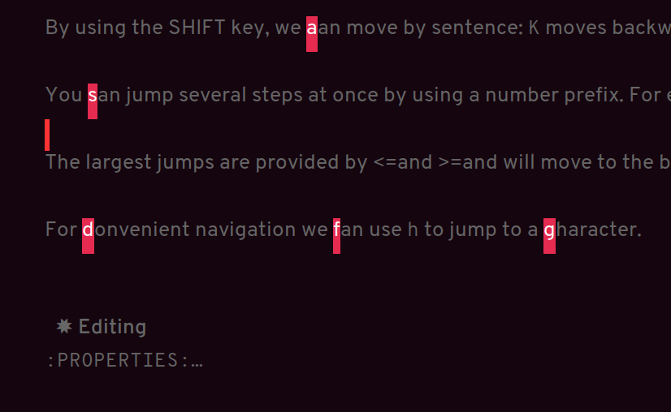

Hotel California of Creative Writing
Table of Contents
1. Boon
1.1. Introduction
Boon is a modal editing package for Emacs that is ergonomic and designed to integrate well with existing Emacs infrastructure. That means that we can continue to use the standard Emacs keyboard shortcuts should we choose to do so, in addition to the features that Boon provides.
Boon is designed so that the right hand takes care of movement, and the left hand do the actions. And great care is taken to ensure that the fingers never leave the home row. Important for touch typists!
Boon is a modal editing system with two modes: Command mode and Insert mode. Command mode is the default mode, and where we perform movement and commands. Insert mode is the mode where the keyboard acts like we’re used to: inserting letters as we type them (as opposed to perform commands).
When in Command mode, we can switch to Insert mode by pressing v. The cursor changes shape and color to indicate that we are indeed in Insert mode. For convenience, pressing S-v will insert a line above the current line and place the cursor in it, and C-v will insert a line below. That often saves us from a couple of keystrokes.
In Insert mode, we can exit it by pressing <Esc> or C-;. The cursor changes back to normal shape and color to indicate that pressing keys will no longer insert letters but perform commands. I’ve bound boon-quit to C-; because <Esc> is not on the home row, even if we rebind it to <Caps Lock>, a fairly common thing to do. The combination of v and C-; means that we don’t have to move our fingers at all, even when switching between the two modes at speed. Ergonomics is important.
C-x and C-c shortcuts are handled in Boon so that any command starting with C-x is simply x, and C-c C- shortcuts are just c.
Not all commands work as you would expect, however, so if we wanted to run find-file (C-x C-f) we will have to press x C-f, and not x f (set-fill-column). That’s because set-fill-column normally uses the shortcut C-x f, and there is no way to make a distinction between the two, find-file or set-fill-column. Luckily, there aren’t many exceptions like this.
1.2. Layout
Here’s how the keyboard layout looks like for Command mode using Boon:

The right-hand side of the keyboard is dedicated to moving around while the left-hand side is dedicated to issuing commands.
1.3. Movement
k l i o are equivalent to the four arrow keys. k moves backward by one character, l moves forward by one character. i moves up by one line, o moves down by one line.
The keys j ; moves by word: j backward by word, ; forward by word.
u moves to the beginning of the line, p takes you to the end of the line.
By using the SHIFT key, we can move by sentence: K moves backward by sentence, L moves forward. Similarly, I and O move by paragraph.
You can jump several steps at once by using a number prefix. For example, 5 i will move up five lines, 8 j will move back eight words.
The largest jumps are provided by < and > and will move to the beginning and end of the buffer, respectively.
For convenient navigation we can use h to jump (hop) to a character. For example, if we wanted to navigate to the word ”character”, we could enter h c and all occurrences of c is highlighted:

Now, if we press g we will land on ”character”.
1.4. Editing
1.4.1. Inserting
v
quote
1.4.2. Deleting
Deleting text is mostly done with d. It takes an argument which can be either a movement command or a region specifier.
When deleting a word under the cursor we are often left with an annoying extra space. We can avoid that by using the select-with-spaces modifier, v, when deleting a word. So, instead of d w to delete a word, we can do d v w to delete the word and the extra space.
1.4.3. Replacing
We can kill and switch to insert state at the same time by using the replace command, r instead of d. It works exactly like d except that it enters into insert mode. It is a convenience that saves you from having to press v after d.
Often, it is useful to be able to replace a single character, and t is used for that purpose. Simply place the point on the character to replace and press t followed by the replacement character.
Another typical character replacement is change of case. The ` key toggles between title, upper, and lower case.